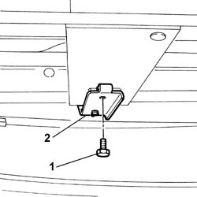
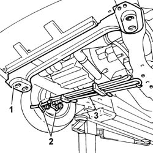

4130B52 HEAT EXCHANGER PIPE - R+R
- Path
- Procedures > 41 STEERING UNIT > 4130 POWER STEERING > 4130B POWER STEERING HYDRAULIC SYTEM > 4130B52 HEAT EXCHANGER PIPE - R+R
- Kind
- repair procedure (removal / refitting; the operation number is the code)
- Applies to
- all engines; all production periods
- Interactive page
- https://sloeber94.github.io/elrnDB-fUlss/en/#/179007366
Applies to: all engines; all production periods
 Removing
Removing
 Refitting
Refitting- Position the vehicle on a lift.
Op. 0010T70 POWER ASSISTED STEERING FLUID - REPLACE
- Raise the vehicle.
- Undo the bumper central bolts.
1. Undo the bolts securing the heat exchanger pipe anchorages.
2. Release the heat exchanger pipe anchorages.

Applies to: all engines; all production periods
- Loosen the radiator unit front beam left bolts.
- Loosen the radiator unit front beam right bolts.
1. Tilt the radiator unit front beam.
- Slightly prise up the bumper.
2. Position the terminals on the heat exchanger pipe.
- Remove the retaining bands.
- Disconnect the heat exchanger pipe.
- Collect the coolant in a suitable container.
3. Remove the heat exchanger pipe.

Applies to: all engines; all production periods
Refitting
Removing- Position the heat exchanger pipe.
- Connect the heat exchanger pipe and secure with collars.
- Remove the terminals positioned previously.
- Position the radiator unit front beam.
- Tighten the bolts securing the front radiator beam to the specified torque.
 | Value - daNm | Fastening | Component | Ø |
|---|---|---|---|---|
. | 8 | Bolt | COOLANT RADIATOR SUPPORT BEAM | - |
- Position the heat exchanger pipe anchorages and tighten the bolts.
- Tighten the bumper central bolts.
- Lower the vehicle.
- Remove the vehicle from the lift.